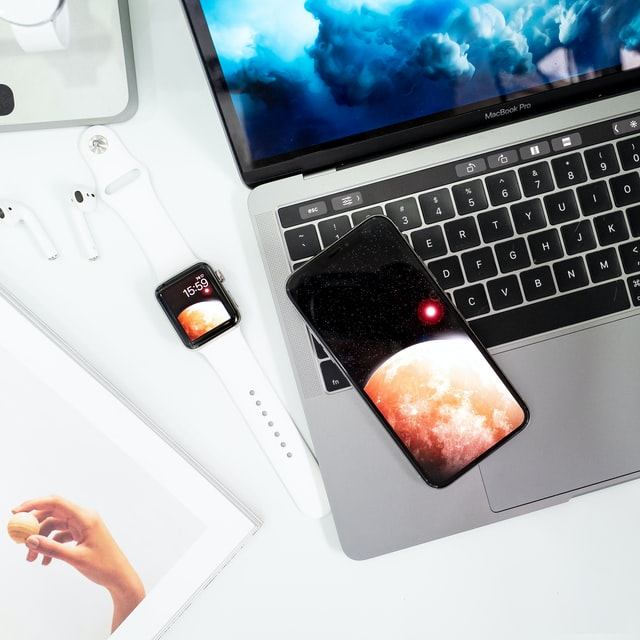

Ciao a tutti! Sono Roberto Celona, nuovo studente di start2impact.
Mi sono iscritto su questa piattaforma per imparare i lavori del futuro.
- Vorrei imparare a creare app capaci di stupire per la loro capacità di coinvolgere
l'utente e soprattutto per la loro chiarezza di utilizzo e interazione;
per questo ho scelto il profilo "React Native Developer".
- Vorrei utilizzare il design come forma di comunicazione per esprimermi al 100%.
Inoltre vorrei riuscire a creare immagini/composizioni che mirino a catturare
immediatamente la curiosità dell'utente;
per questo ho scelto il profilo "UX/UI Designer".
